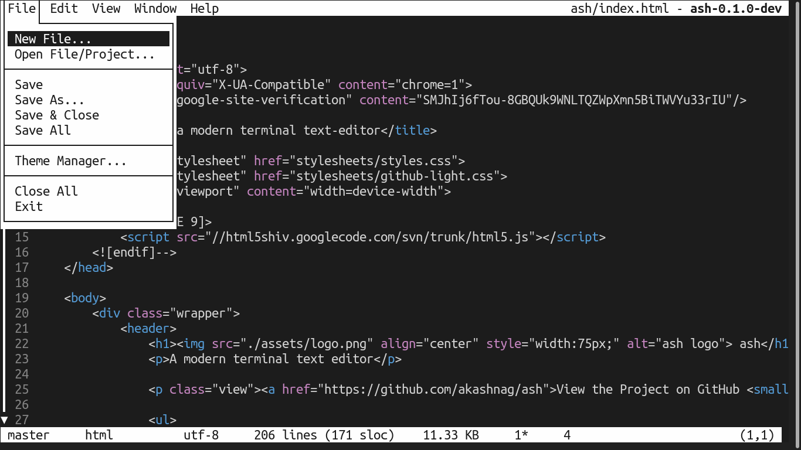
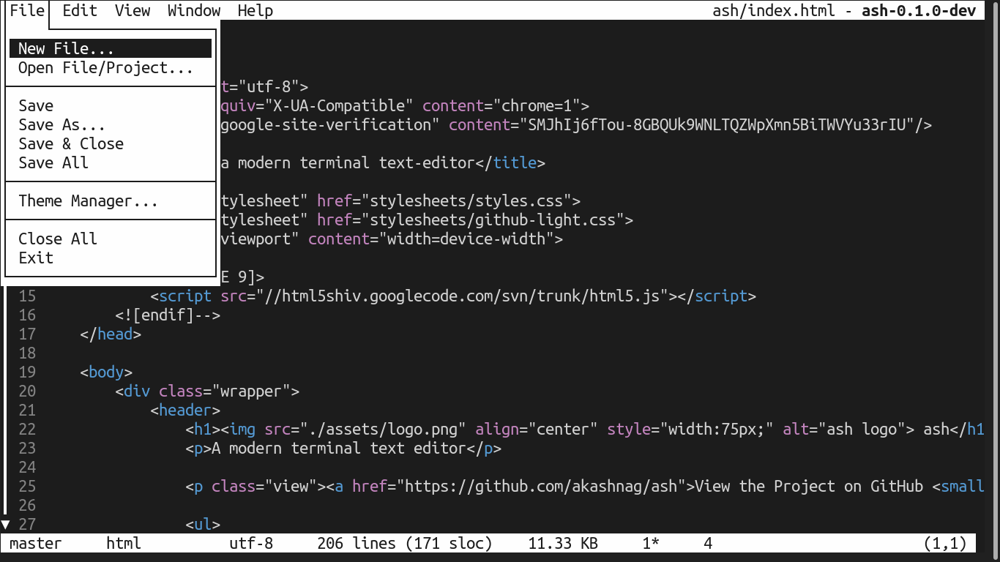

ash
A modern terminal text editor


ash is a simple and clean terminal-based text editor, that aims to be easy to use with modern key-bindings. It is capable of handling multiple files simultaneously and has a wide array of modern features. Here is a picture of ash editing this README file:

ash is written in Python 3.8 using the curses library.
Table of Contents
- Design Goals
-
Installation
- Prerequisites
- Installing ash
- Downloading and setting up the developmental build for ash
- Prebuilt binaries
- Colors
- Usage
- Contributing
- Screenshots
- License
Design Goals
The following is a list of design goals for ash:
- Easy to use
- Clean and intuitive interface
- Minimal dependencies
- Common keybindings
The following is a list of features available in ash; some of which have already been implemented, while some are yet to be:
Already implemented:
- Common editor features such as undo/redo, line numbers, find-replace, cut-copy-paste, etc.
- True support for wrapping (both hard & soft) with intuitive cursor movements along wrapped text
- Auto-backup
- Support for Unicode
- Project mode (opening a directory instead of individual files)
- Support for splits/windows
- Support for various text-encodings
- Syntax highlighting (partially implemented)
- Selection highlighting (highlights text under selection wherever they occur in the document)
- Color scheme customization
Not yet implemented:
- View list of recent files
- Git integration
Future goals:
- Macros and command-palette
- Autocompletion/Suggestions
- Integrated terminal
- Plugin system
Installation
As ash is still in development, there are no prebuilt binaries available for download. However, if you have python 3.8 installed on your system, you can download and install a released version or run a developmental build for ash. For Linux users, follow the following steps to get ash on your system:
Prerequisites
You need certain packages and Python 3 itself to download and run the developmental build:
$ sudo apt install git
$ sudo apt install xclip
$ sudo apt install python3
$ sudo apt install python3-pipInstalling ash
If you want to install ash on your system, download the .tar.gz file from the latest release (from the Releases section on GitHub). Extract it a folder, and once inside that folder (make sure it contains the file setup.py), execute the following:
$ sudo pip3 install .To run ash make sure you have :$HOME/.local/bin appended to your $PATH variable in the file ~/.bashrc. To execute ash, see the Usage section.
Uninstalling ash
To uninstall ash you can use:
$ sudo pip3 uninstall ashDownloading and setting up the developmental build for ash
Note: This section is only for users who want to run the latest build
$ cd ~
$ git clone --depth 1 -b master https://github.com/akashnag/ash.git
$ cd ash/bin
$ sudo chmod +x ash
$ cd ..
$ sudo pip3 install -r requirements.txtTo be able to launch ash from anywhere, you need to add ~/ash/bin to your path by editing your .bashrc file:
$ sudo nano ~/.bashrcThen append :~/ash/bin to the PATH variable. You are now ready to run ash from the terminal. See Usage for details.
Prebuilt binaries
Since ash is still under development, prebuilt binaries are not yet available. You can use PyInstaller or similar tools to build one for your system.
Colors
If you are using the default Ubuntu terminal, to enable 256 make sure your TERM variable is set to xterm-256color. After ash runs for the first time, it creates a .ashrc file inside your home directory. You can edit that file directly to change how ash looks on your system. The RGB triplets listed in that file range from 0--255. If you want to reset ash to its default colors, delete the configuration file using: rm ~/.ashrc.
Usage
Once you have downloaded the ash source code, and set it up as detailed above, you are ready to use it.
NOTES:
- If you have not updated your path variable, you must specify the full path to the ash binary.
- Your terminal resolution should be at least 102 (width) x 22 (height). Opening the editor in a lower resolution may unexpectedly crash the application. This requirement is necessary to properly display the dialog-boxes.
To run ash:
$ ash path/to/file.txtor, to open an empty buffer:
$ ashor, to open a project (directory):
$ ash path/to/directorySee the Key Bindings for help on how to navigate in ash.
Contributing
If you find any bugs, please report them. I am also happy to accept pull requests from anyone for either bug-fixes, performance improvements, or for implementing the not-yet-implemented features listed above. Please consider contributing towards new features only when the features listed above have been fully implemented. For more information on what features to implement and the project structure, see the Contribution Guidelines
You can use the GitHub issue tracker to report bugs, ask questions, or suggest new features.
For discussions related to the development roadmap and the ash editor in general, you can join the Gitter chat.
Screenshots
 



License
Copyright © Akash Nag. All rights reserved.
Licensed under the MIT license.